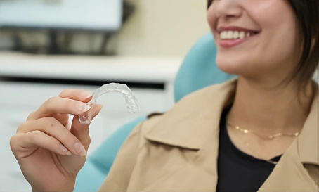
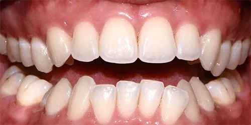
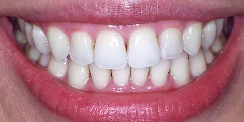

Invisalign in Pennant Hills
Invisalign is a clear aligner system that moves teeth gradually using a series of custom-made, removable trays instead of fixed brackets and wires.
Gold+ Invisalign provider · 2022
Crooked, crowded or gappy teeth affect more than appearance.
Misalignment can make teeth harder to clean, place an uneven load on the jaw joint, and wear down enamel over time.
Invisalign straightens teeth with clear, removable trays, each one made for you, so there are no fixed brackets or wires.
- Teeth that are harder to clean
- An uneven load on the jaw joint
- Enamel worn down over time
How the aligner journey works
From the first scan to the last set of trays, you can see where you are going before you start.
-
A digital scan, not a mould
Treatment starts with a digital intraoral scan rather than a physical mould.
-
See the projection first
You can see a projection of your expected tooth movement before you commit to anything.
-
Wear them 20 to 22 hours a day
Aligners are worn 20 to 22 hours a day, so they are in for most of the day and night.
-
A new set every 1 to 2 weeks
Each set is swapped for the next roughly every one to two weeks, moving your teeth a little at a time.
Curious what your own projection would show?
Book a free Invisalign consultation →
Invisalign here since 2013
At Beyond 32 Dental, we’ve been providing Invisalign treatment since the practice opened in 2013.
- Gold+ Invisalign provider, 2022
- 5.0 Google rating from 360+ reviews
- All health funds accepted, with on-the-spot claiming
Before and after Invisalign
One of our patients, photographed at the start of treatment and after their final set of aligners.


Patient images are published with consent and are intended for educational purposes only. Results vary between individuals, and all dental procedures carry risks.

Book your free Invisalign consultation
We’re a five-minute drive from West Pennant Hills and Cherrybrook, with three hours of free parking on site.
To book your free Invisalign consultation, call us now on (02) 9158 6334.
Other ways we straighten teeth
Not sure which suits you? We’ll talk you through the options at your consultation.
The information on this page is general in nature and is not a substitute for an examination. Any surgical or invasive procedure carries risks. Before proceeding, you should seek a second opinion from an appropriately qualified health practitioner.